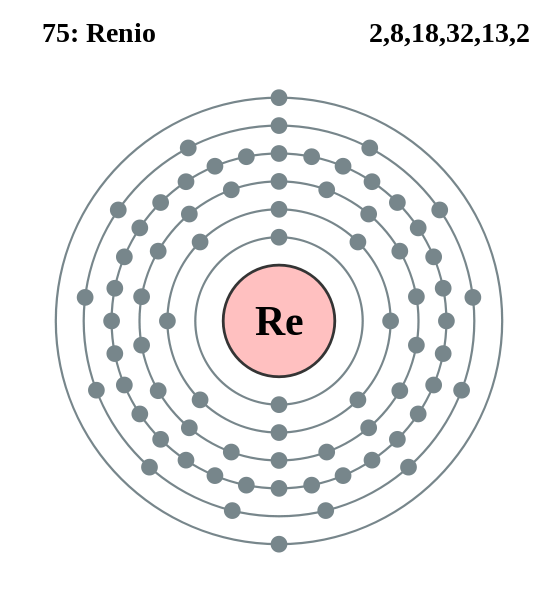

|
|
||
|
RENIO El renio se descubrió en 1925 en minerales de platino y columbita. No se produce solo en la naturaleza o en un mineral específico, sino que se extiende por toda la corteza terrestre. Este elemento es de color blanco plateado con un lustre metálico y, en forma de polvo, se puede consolidar, templar, doblar, bobinar o enrollar. El renio natural es una mezcla de dos isótopos estables; los otros 26 isótopos son inestables. También se usa el renio en filamentos para espectrógrafos de masa, medidores iónicos y lámparas de destellos. Los catalizadores de renio resisten los efectos químicos del nitrógeno, el azufre y el fósforo, y se utilizan para hidrogenar productos químicos finos. |
 |
DATOS Número Atómico: 75 Peso Atómico: 186.2 Electronegatividad: 1,9 Configuración Electrónica: [Xe]4f145d56s2 Estados de Oxidación: +7,4,6 No. de Electrones de Valencia: 7 |